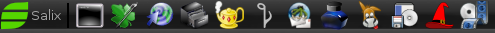
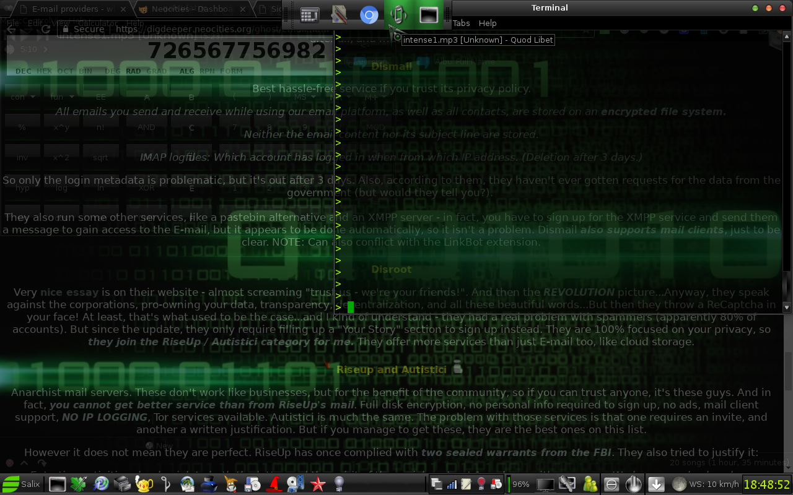

The more accurate title would be the things I do after installing a Linux system to make my experience more comfortable. Even with such a user-friendly distro as Salix (which this guide will assume - but most of it can be adapted to other distros), it is easy to get overwhelmed, especially for a recent Windows refugee. So, hopefully this article will provide some direction and save you time, effort, and possible frustration for when you break something and / or have to install Linux on another machine.
Now, Salix repositories are quite large and should be enough to get you started, but someday you will need to branch out. The defaults are limited to packages from Slackware 14.2, while sometime you just might need a newer version (for example, certain python3 applications require 3.6 which Salix does not provide). Some packages are also not available at all, such as SpaceFM, my favorite file manager. In come the Slackel (http://www.slackel.gr/repo/x86_64/current/) and SlackOnly (https://packages.slackonly.com/pub/packages/14.2-x86_64/) repositories. Just start up Gslapt, go to Preferences - Sources, click Add, and copy those links. Remember, though, that you can easily break shit if you aren't careful - a repo can, for example, pull in a library that a package requires, and that one will replace the one you had before - breaking everything that was dependent on it. There are also other available repositories, such as Ponce or Alien - search around!
It is hard for a distro to contain everything you need and nothing else - in fact, it is impossible (but Salix comes close). So you will always have to add and remove something. You can use the repositories you've added in the previous step - or, another nice way to install a particular package you need is to use SlakFinder (http://slakfinder.org/ - here are my search plugins for its easier usage). This website allows you to type a package name (even partial) and it will show you all the repositories you can download it from (including the links!). You will have to use the installpkg command to use those. This way will also not bring in any dependencies, which has its advantages (no breakage) and disadvantages (package might not work). Note: if you want to skip installing dependencies, you can use the Download packages only option in Gslapt - or find a repository that doesn't contain dependency information. I will assume you've managed to install everything you need without breaking anything (harder than it sounds sometimes). Slapt-get (what Gslapt uses) keeps all its installed packages in /var/slapt-get/, so I recommend to copy those to a pendrive. This way, if you ever install Salix elsewhere, you can immediately bring it to your preferred state by running the command "sudo installpkg ./*" while inside the folder you've stored them in. And you won't even have to connect to the Internet anymore to download those packages.
Unfortunately for us Slackware-based distribution users, Ubuntu / Debian are the primary target for many Linux developers. Therefore, many packages cannot be found in the Slackware .t*z format, but can in .deb or sometimes Red Hat's .rpm. What do to then? deb2tgz and rpm2tgz to the rescue. These scripts allow you to convert any .deb or .rpm package so that it is compatible with Slackware-based distros. deb2tgz is found in the SlackOnly repository, while rpm2tgz - in the Salix one.
By default, Salix includes only a few generic icons on the panel - the terminal, text editor, file manager and web browser. But of course you will use so much more of them - so why not put the most used ones in there as well? Let's add a music player - right click the panel, hover over Panel, and click Add new items. Now choose Launcher and click Add. An empty icon will appear in there - right click it and choose "Properties". Now click the plus button. Type the name of your music player (for example QuodLibet) or find it in the list of applications, then click on it and use the Add option to put it in the panel. Close the launcher editor, right click the icon that appeared, and Move it to wherever it is convenient for you. You will probably install packages pretty often, so let's add Gslapt in there as well. Then the mail client, painting program, IDE, and movie player. You're all set! The result should look something like this:

This should heavily boost your productivity - no more clicking around to find the program you're looking for. The panel settings (as well as other Xfce-related ones) are stored in /home/YourUsername/.config/xfce4/, so you can easily copy them to a pendrive or something. And if you break Linux on this machine, you can just reinstall it and keep the home partition, so the settings will be carried over.
Let's face it, Xfce's default look sucks. And all its default themes also suck. Now you can install the murrine engine and its associated themes, but they are only slightly better. Chances are, if you want to actually enjoy looking at your computer, you will need to peruse the website https://xfce-look.org/. But first, go to Settings > Settings manager and let's see how is the look of Xfce actually decided. You can divide it into five parts:
gtkrcfile in your favorite text editor. There's really no proper documentation for doing this, so you'll have to figure out what stuff means on your own.
Lots! Let's go through them one by one:
If you want to create a new panel, right click an existing one and navigate to Panel > Panel Preferences, then click the + button. There you can choose its properties such as size or whether it will hide itself when the cursor is away. You can use it, for example, to display the currently active applications at the top while you hover over there. Okay, that's about as much as you can do with pure Xfce. The final result might look something like this:  There are some other tools for more heavy ricing that I might describe someday; for now though, let's move on to functionality.
If you're like me, you will be spending much of your computer time browsing the Internet. So why not prepare it for this - as we will see - gargantuan task now? First of all - the browser choice. Refer to my other article - How to choose a browser for your daily use? - for advice on this topic. Time to harden it with addons (if it supports them - but if you read the linked article, you will hopefully see how essential they are). Essential privacy (and other) addons. Now let's set up our search engines. The nice thing about Chrome-based browsers is that they will detect whenever you use a search engine, and automatically add it to the settings menu. Go there and click "Manage search engines". There, you will have a list of all the ones you've ever used - so if you searched for something with SlakFinder, you can now set a keyword for it. Click on the three dots to the right of it, Edit, and put "sf" as the keyword. Now you can perform a SlakFinder search by typing sf your-search-term in the address bar. Pretty convenient, huh? Now do the same for StartPage (keyword st) and DuckDuckGo (keyword ddg), as well as any others you want. This is also possible in Firefox-based browsers, but you will need to find a plugin from https://mycroftproject.com/ for the website you want to search through.
A network that allows (relatively) anonymous web browsing - read the first section of my article if you want to know more (but don't get discouraged - it is still useful). First, find the Tor package in Gslapt and install it. The default configuration requires a separate user for running it - so let's create it. Click the Salix button at the lower left corner and go to System > Users and Groups. Click the Manage groups button, then Add, and type tor in Group name. Now that you've added the tor group - time to create the tor user and add him to that group. Close the Groups menu and click Add. Type tor in the Username field and anything you want as his Real Name. Now switch to the Groups tab and choose tor as his main group. Click OK and you're done here. Now type these commands into the terminal: sudo chown -R tor /var/log/tor, then sudo chown tor /var/lib/tor. This will make the newly created user the owner of some directories Tor requires, so that he has the permissions to use them.
Now the fun part - setting up your web browser to use the network. If you use the Proxy SwitchyOmega extension, as I recommend - go to its options and click New profile on the left. Type Tor as the profile name and click Create. The fields should be filled as such: Protocol - SOCKS5; Server - 127.0.0.1, and Port - 9050. That's it! Now you can type sudo tor in the terminal anytime you want to run it. Click the SwitchyOmega button to switch to the Tor profile whenever you want to browse anonymously (but keep in mind you will be easily identified if you use the same accounts as for regular browsing, or through undeleted cookies and such - so be careful). While browsing, you will see that some websites try to restrict or outright block you - if you encouter them, you can add them to the Bypass list to connect to them directly. What about software other than the web browser? You will need the torsocks package (available from the default repositories) and run it from the command line like this: torsocks wget https://here-be-dragons.com for example.
However, I recommend a VPN these days - less hassle since all your connections are proxied by default. Do not use NetworkManager to configure them! Since it doesn't seem to be able to run the essential vpnfailsafe script for preventing VPN leaks. So you will have to type the terminal command such as sudo openvpn --config /etc/openvpn/your_vpn_config.ovpn. A VPN provider should have those config files available, and then you have to add the vpnfailsafe script execution to them (their github page explains how to do it). To be even safer, you should have the VPN run on system startup (System -> System Services -> OpenVPN service; if you have more than one VPN config file in /etc/openvpn, you're going to have to edit /etc/rc.d/rc.inet2 manually).
If you are a developer this is a great, lean tool to use and installed by default in Salix. What I like to do here is first to create some projects using the Project > New
option. With this, you will be able to switch through different projects with three clicks and have all their files loaded. Very useful if you, for example, both develop a website and create software. The fun thing about this is that you can search and replace a string in all loaded files (Ctrl+H -> Replace all in session). Makes it much more convenient to do mass modifications. Another feature I like to use is templates - if you are going to be creating documents that look the same just with different content, templates are invaluable. Create a skeleton of your file with all the content removed and put it in /usr/share/geany/templates/files/. Then, anytime you want to make a new document you can do that in 3 clicks with File -> New with template and then choose the template. Very convenient! Macros are another thing you should really try to learn (Tools -> Edit macros) - these allow you to make more complex modifications to a document, but they can be kind of hard to use. Though with a little bit of effort they can automate lots of tough tedious work.
Another one you'll be spending some time on. This guide will assume you are using SpaceFM, since it is simply the most powerful one. What can it do?
Let's face it - it can get tedious to type the same long terminal commands all the time. Aliases to the rescue! In your home directory, create a file named .bash_aliases - yes, with the dot - and put this line there: alias sli="sudo slapt-get install". Since you will most likely be using slapt-get quite a bit, this will bind it to the shortcut sli. And you can do that for any command just by putting an alias in a new line. Keep in mind you have to log out to have the shortcuts be applied.
Just a program that shows you all the hardware you have - something that should really be there by default, but somehow isn't. Available in the default repos.
It is inevitable that you will lose some of your data sooner or later - whether through power, hardware, or system failure; accidentally (or on purpose - and then regretting it) deleting it, or through an overzealous BSD installer eating your old partitions. Easy to say back it up! - and you should - but a backup can get eaten by a dog too. There are two tools available for data recovery - extundelete and PhotoRec. Now, the former only goes after the files still present in your filesystem - even then, I've always had problems actually getting it to do anything; the latter, on the other hand, goes straight to the underlying data. It will recover anything that can be - so let's learn how to use it.
Let's say you've had some hacking ^_^ ebooks stored on a pendrive - but you've decided to use it for something else - and now you'd like to bring them back. Type sudo photorec in the terminal and choose the relevant drive. Now press the right arrow twice to enter File Options. Press S to disable all the file types, then scroll down to pdf, press Space and Enter to go back to the main menu. Forget about specific partitions - it might have been repartitioned a thousand times since the data loss - so use the No partition - Whole disk option. Again, filesystem doesn't matter if we're looking through the whole disk, so just select ext3, move the cursor back to Search, and press Enter. Last thing you have to do is choose where the recovered files will be dumped. You can create a new folder "Recovery" inside /home if you want to. Before we start, I should warn you that the dumped files can take quite a lot of space - even all of it - so watch out. Okay, let's press C, and the process can begin.
Right away PhotoRec will begin dumping a bunch of files (if it found anything) - and you can explore them real-time. The recovery can take quite long, so be patient. Now remember - PhotoRec goes after the underlying data - so you can find some partial or corrupted files - and the filenames are ignored since they are stored in the filesystem. You might be surprised at what PhotoRec finds - I've seen system-related stuff from like five installations ago, or old pictures I've used for shitposting on chans that I forgot have even existed. To make it easier to find the file you want, sort them by size so the useless <1KB ones will be shown first. If it was a text file, you can also type the command grep -rnw '/home/YourUsername/Recovery' -e 'TextToBeFound', which will search for files containing a particular string inside the Recovery folder. Okay, that's about it for our brief PhotoRec guide (it can do more - search the 'net; the basics are sufficient though). Hook up some old drives and happy hunting!
If you are anything like me, you probably have your favorite, carefully prepared system configuration that you don't stray away from (except to check stuff out sometimes, maybe). Isn't it annoying, then, how if you want to copy it to another computer, you have to install that distro again, plus remember and redo all the modifications? Fortunately I've recently discovered a way to bypass that process and I will list the exact steps here:
&character after it (for example,
gparted&or
gslapt&). If you've already run a command without it, press Ctrl+Z in that terminal window and take note of the number in parentheses that appeared. Then, type
bg that number, for example
bg 3, which will send the command to the background. You can bring it back to terminal with
fg 3.